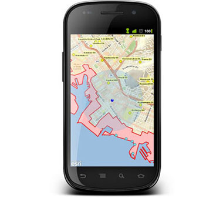

GeoDev Meetup PDX - Nov 2014
@Al_Laframboise / alaframboise@esri.com / alaframboise.github.com
Agenda
Intro
Special Guest Speaker
Show and Tell Talks
Raffle!
Where are the slides?
Meetup.com - alaframboise.github.ioMeetups near you!

Connect, Share, Ask
Please upload your presentations!
Staying In the Loop
#geodev
Developer Resources
Super GeoDev Meetup - 2015?
1:00 - 5:00 PM - Hack, Code, Share
Wanna a Geo Challenge?
-
6:00 - 9:00 PM - Meetup
Challenge Winner
What's new for December?
JS.Geo was a hit!
FOSS4G 2014, Portland Sept 8-13th
ArcGIS Online 3D Scene Viewer
Use your ArcGIS Server data or AGOL data to make scenes.
New dark gray basemap!

ArcGIS JSAPI 3.10 & 3.11 are out!
GeoJSON will be supported!
Emit GeoJSON from feature services
Export GeoJSON from feature services
Hosted Tiles
Take your hosted tiles offline with Collector
Map Viewer
Create Map Notes from find results
Create viewshed, watershed, downstream trace
Easier to embed maps
Web App Builder moving out of beta
Geocoding
Specify area of interest to refine results
Add 1.7 more POI
Find things by Category
Explorer for ArcGIS - Mac!

ArcGIS Runtime Update
What up?

esri.github.io
Got GeoJSON?

geojson-layer-js
Feeling a little clustered?
cluster-layer-js
Get a little Angular!

angular-esri-map
developers.arcgis.com

Get an free account!
What do you get?
What are credits?


Guess what?
You just won 1000 credits!
How to collect your voucher
Code: Sorry, you had to be there!
What can I do?
Show me something cool!

geonet.esri.com
"infinite Geo conversation..."

Why GeoNET?
- Search
- Ask Questions. Get Answers.
- Follow Activity
- Create Groups, Polls, Documents
- Your own Blog
- Share maps
- Connect with Members
New Group!
Tonight's Homework
- ArcGIS Dev Subscription > Voucher
- Join GeoNET > GeoDev
- Tweet #geodev
Show and Tell Talks - New!
- Paul Ferro - "Implementing Geocortex Web and Mobile Solutions at the Port of Portland"
- Andrew Ferlitsch - "Opengeocode.org (open src/open data site)”
- Ryan Arana - "Geobin.io - Visualizing geographic POST data since 2014!"
- Aaron Paul - "Leveraging Web GIS"
- Kerry Halligan - "Offline Editing In Action: a Success Story with the ArcGIS Runtime SDK"
- Robert Krisher - "Leveraging ArcGIS Data within Neo4j for Analysis Purposes"